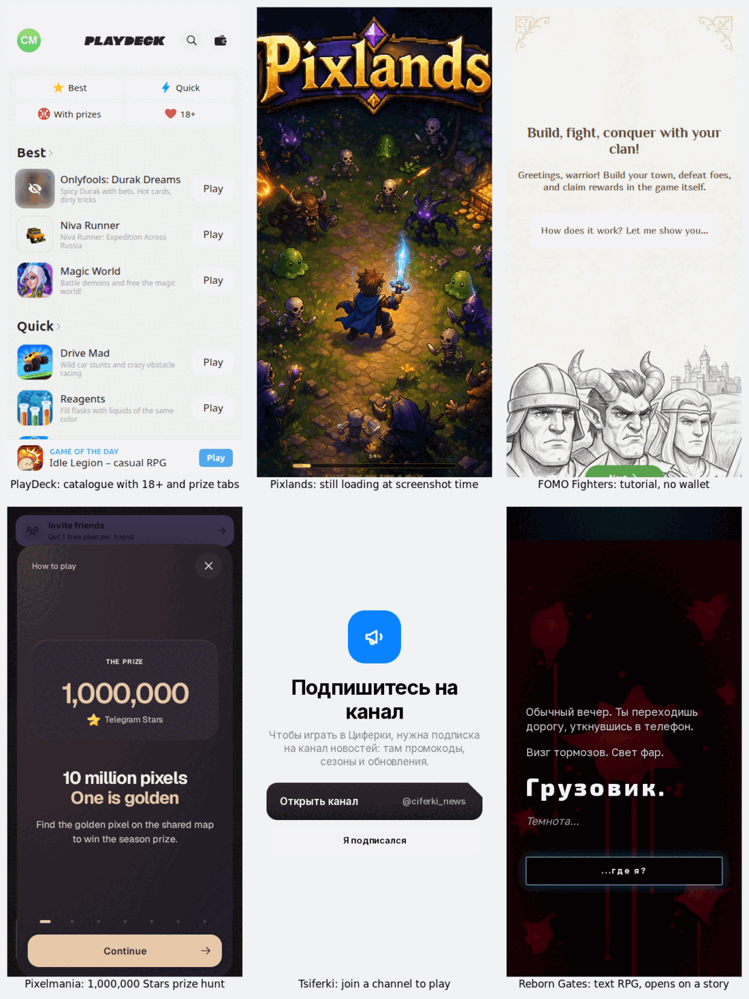

Telegram Mini Games List: 192 Top Apps Opened, 28 Are Games
Open Telegram, tap search, and switch to the Apps tab. That list isn’t put together by a blogger. Telegram builds it. The API method behind it, bots.getPopularAppBots, is described in one line: “Fetch popular Main Mini Apps, to be used in the apps tab of global search”. If you want a list of Telegram mini games, it’s the obvious place to start, because it’s the list Telegram itself shows people.
So on the nights of 11 and 12 October 2026 I pulled the whole thing, read the profile of every app on it, and then opened the games one by one. Telegram gave my account 192 apps. 28 of them are games. 40 are case, crash, roulette or casino apps and 8 more are loot boxes for game skins, so 48 sell you a random prize. In the top 20, it’s 10 prize apps against 4 games.
That doesn’t mean there’s nothing to play. It means the games are mixed in with a lot of things that only look like games. Below is what each one actually showed on its first screen, which ones asked for something before you could play, and a short list of the ones worth opening.

How I built the list
The list. I called bots.getPopularAppBots from my own Telegram account until it stopped returning pages. It returned 192 apps in two pages, each with its profile text and the “monthly users” number Telegram shows on the bot’s page. Five apps don’t show that number. The other 187 add up to 33,060,658 monthly users.
It’s personal. I ran the same call a second time with the app language set to English. 183 of the 192 apps were the same, in a different order. So the language setting barely changes it, and something else does: my account is on a Ukrainian number, and 78 of the 192 profiles are written at least partly in Cyrillic. If you’re in the US or India, your Apps tab will share some of these and not others. Treat the counts below as one account’s view, not a world ranking.
The sorting. I read every profile myself and put each app in one category. Anything whose profile said nothing useful went into “unclear”. Then I opened all the games and all the unclear ones and changed ten verdicts based on what the first screen showed. Four apps that I had down as games turned out to open on a token pitch, an airdrop hub, a crypto wallet login, or call themselves play-to-earn in their own name. They moved to play-to-earn.
Opening them. Mini Apps are web pages. Telegram’s Mini Apps documentation says they’re built with JavaScript and “can be launched right inside Telegram”. For every game, I asked Telegram for the same launch link the app would open, loaded it once in a fresh browser at phone size, let it run for 12 to 15 seconds after the page loaded, and saved the screen. No taps, no Stars, no wallet, no “free case”.
What’s actually in Telegram’s Apps tab
| What it is | Apps | Monthly users |
|---|---|---|
| Cases, crash, roulette, casino | 40 | 6,860,511 |
| Play-to-earn, mining, airdrops | 34 | 3,522,867 |
| Games | 28 | 3,129,134 |
| AI companions | 20 | 1,939,865 |
| AI tools (chat, images, video) | 16 | 6,911,064 |
| VPN and eSIM | 10 | 2,565,172 |
| Dating and meeting people | 9 | 2,358,480 |
| Loot boxes for game skins | 8 | 881,083 |
| Gift markets | 5 | 577,096 |
| Other (music finder, short dramas, ad tools…) | 18 | 3,714,028 |
| Unclear (wouldn’t load or showed only a sign-in) | 4 | 601,358 |
Two things stand out. Prize apps outnumber games, 48 to 28, and they have more than twice the monthly users (7.7 million against 3.1 million). And the only category that comes close to them in users is AI tools, which is mostly one bot: @GPT4Telegrambot on its own has 2,633,148 monthly users.
The case apps: why there are so many
Most of the 40 gambling apps aren’t casinos in the usual sense. 35 of them mention gifts or NFTs in their profile. They run on Telegram’s gift economy: you buy Stars, Stars buy gifts, and a gift can be upgraded into a collectible. Telegram’s own announcement says collectible gifts “can now be transferred or auctioned via the TON blockchain”. Once a gift has a resale price, an app can sell you a random chance at one. That’s what “open a case”, “rocket” and “upgrade” mean on these first screens.
Nine of the prize and gift-market apps list a “Deposit” account right in their profile. That’s a Telegram account you send gifts to so they show up as balance inside the app. Five apps sell, trade or track gifts, with no game of chance in the profile. I counted those separately as gift markets.
Some aren’t about gifts at all. @raika opened on a full casino lobby: slots, live games, a balance in dollars, and providers such as Pragmatic, Evolution and NetEnt. @yakludkabot opened on Cases, Crash, Plinko, Mines and “Slots 777” with a lottery round counting down. Both sit in the same Apps list as a cozy monster game.
Whether a loot box counts as gambling depends on the country, and the argument usually turns on whether the prize is worth money. The UK government’s 2022 response on loot boxes records the recurring argument that loot box rewards “already amount to ‘money or money’s worth’”, and still decided it did “not intend to make changes to the Gambling Act” for loot boxes at that time. I’m not a lawyer. What matters if you’re just looking for a game: these apps sell a random draw, and the prize can be sold. I’m not linking any of them.
What the 28 games showed on the first screen
Here’s the count across all 28, before anyone taps anything:
- 12 loaded to a playable screen or a short tutorial and asked for nothing.
- 4 stopped me at a wall: an 18+ age check (
@slaves_rebot), “subscribe to our channel to play” (@CiferkiGameBot), “you are using too old Telegram client” (@RoyalDnoBot, probably because I opened it outside the app), and a log-in screen for “The Prison” (@pro_prison_bot). - 10 were still on a loading screen or blank when I took the screenshot. Big games like Hamster Kombat GameDev, Bums and Era of Valor are heavy. On a phone inside Telegram they may well start, but I’m not going to say they work when I didn’t see it.
- 2 didn’t open at all in my test.
None of the 16 games that showed me a screen asked for a phone number or a crypto wallet. The wallet asks were all in the apps I’d moved to play-to-earn: @Ton_kombat_bot opens on “Connect to Sei Network”, and Catizen opens on a hub of Airdrop and Earn tabs, not on the cat game.
Prizes turn up even among the games. Of the 12 that loaded, 5 put a spin or a prize on the first screen. Boinkers is a slot machine with a big red SPIN button. Nomerok, a car-number-plate collector, has a raffle with 15-Star tickets on its main screen. Pixelmania hides one golden pixel among 10 million and offers 1,000,000 Stars for it. Universe says “the prize pool is real”. PlayDeck’s catalogue has tabs called “With prizes” and “18+”, and on my screen its first “Best” pick was a Durak game “with bets”.
The Telegram mini games worth opening
These are the ones that loaded for me and let me start without a wall, a wallet or a deposit, sorted by monthly users. Several are Russian-only. That’s what my account’s list looks like, and I’ve said so in the table.
| Game | Monthly users | What you get |
|---|---|---|
@playdeckbot PlayDeck | 1,126,438 | A catalogue of 250+ small games. Use the Quick tab. Skip “With prizes” and “18+”. |
@fomo_fighters_game_bot FOMO Fighters | 46,774 | Build a town, join a clan, fight. Opens on a tutorial. Its twin @fomo_fighters_bot says “No airdrops. No waiting.” |
@anydeck_bot Any Deck | 22,093 | Anime card collecting (One Piece, Bleach, Attack on Titan). Asks only for a nickname. Russian. |
@BarygaAppBot Baryga | 21,566 | A reseller simulator: buy junk lots blind, sell finds at a markup. Play money, free. Russian. |
@reborn_gates_bot Reborn Gates | 15,236 | A text RPG that opens on a story: a truck, darkness, “where am I?”. Russian. |
@victorfcbot Victor FC | 13,408 | Football card packs and trading with friends. Russian. |
@LudoKarBot LudoKar | 13,084 | Real-time Ludo, in a group or a private chat. Opens on your profile: rating 0 and 22 badges to unlock. |
For a game you play with people, LudoKar is the one on this list. The others you mostly play on your own, even the ones with clans or card trading. If what you want is a game with friends in a group chat, Mini Apps aren’t the only way. Telegram has had a gaming platform since 2016. Six game emoji work in any chat with no bot. @gamebot works inline, and the inline bots list has a few more. I covered all of these side by side in five ways to play games on Telegram.
Want a game for the group, not a case?
The free Party Game runs Truth or Dare, Never Have I Ever and Would You Rather as a Mini App inside Telegram. No Stars, no wallet, no channel to join, and nothing to win.
Open the Party Game No Telegram? It runs in a browser too: charliemorrison.dev/party-gameHow to tell a game from a prize app before you tap
After 192 profiles, the giveaways were easy to spot. Read the bot’s profile before you open it:
- “Deposit: @something” in the profile. A game doesn’t need you to send it gifts.
- Cases, rocket, crash, roulette, upgrade, “win NFT gifts”. These are the words of a random-prize app, whatever the cartoon says.
- A token with a $ in front of it, “airdrop”, “earn”, “mine”. That’s play-to-earn. Expect a wallet request somewhere.
- A “Relayer” or “Payouts” account listed next to support. Same idea as Deposit.
The monthly-users number tells you how many people opened it, not whether it’s a game. The most popular gambling app on my list had 1,136,744 monthly users, more than PlayDeck.
Game night without an app
The Telegram Party Pack is plain text you paste into the chat: 110 Truth or Dare, 45 Never Have I Ever, 30 Would You Rather, 30 Most Likely To, 25 Paranoia and 15 Story Chain prompts, with ready-made poll blocks and a host guide. Nothing to load, nothing to deposit.
Get the pack — $9.99 Or see the party games list for what works in a bigger group.What I didn’t test
One account, one list. The Apps tab is personal. Mine came from a Ukrainian number. Changing the language to English changed 9 apps out of 192.
First screens only. I didn’t play past the first screen, buy anything, or open a case. A game that looked clean on screen one could push a wallet on level five. A game still loading at screenshot time isn’t a broken game.
Outside the Telegram app. I loaded each app’s real launch link in a browser at phone size, not inside Telegram. One app saw that and said my client was too old. Others may have acted differently in ways I couldn’t see.
My categories, my judgement. 4 apps stayed unclear because they wouldn’t load or only showed a sign-in. Where an app was both a game and a prize app, I went by what the first screen pushed hardest.
The short version
- Telegram’s Apps tab is mostly not games. 28 of 192 on my account. Prize apps: 48.
- To just play something: PlayDeck’s Quick tab, FOMO Fighters, or LudoKar if you want to play with friends.
- Skip anything with a Deposit account in its profile, or words like cases, crash or upgrade.
- For a group chat, game emoji and
@gamebotwork with no Mini App at all.
FAQ
What are Telegram mini games?
Games built as Telegram Mini Apps: web pages that open inside Telegram from a bot. You find the popular ones in the Apps tab of Telegram search. They run without installing anything.
Where is the list of Telegram mini games?
In Telegram search, on the Apps tab. Telegram builds that list itself. On 11 October 2026 it showed my account 192 apps, and 28 of them were games.
Are Telegram mini games free?
Most of the games let you start free. Of 28 games I opened, 12 loaded and asked for nothing, and none of the 16 that showed a screen asked for a wallet or phone number. Many sell items for Stars, and 48 other apps on the list are case or loot-box apps that sell random prizes.
Why are there so many case apps on Telegram?
Telegram gifts are bought with Stars and can be upgraded into collectibles that can be sold or moved to the TON blockchain. That gives them a resale price, so apps sell random chances at them. 35 of the 40 gambling apps I found mention gifts or NFTs in their profile.